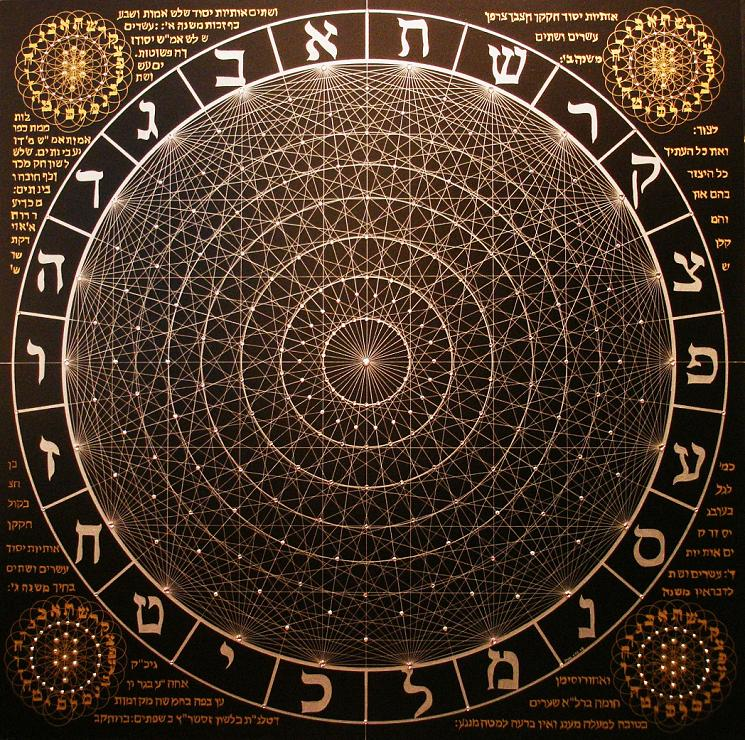

Judaism
 Judaism claims
a historical continuity spanning more
than 3000 years. It is one of the oldest monotheistic religions,[7] and
the oldest to survive into the present day.[8][9] Its
texts, traditions and values have inspired later Abrahamic
religions, including Christianity, Islam and
theBaha'i
Faith.[9][10] Many
aspects of Judaism have also directly or indirectly influenced secular Western ethics and
civil law.[11]
Judaism claims
a historical continuity spanning more
than 3000 years. It is one of the oldest monotheistic religions,[7] and
the oldest to survive into the present day.[8][9] Its
texts, traditions and values have inspired later Abrahamic
religions, including Christianity, Islam and
theBaha'i
Faith.[9][10] Many
aspects of Judaism have also directly or indirectly influenced secular Western ethics and
civil law.[11]
1. Kabbalah
Kabbalah (Hebrew: קַבָּלָה,
lit. "receiving") is a discipline and school of thought concerned with the mystical aspect
of Judaism.
It is a set of esoteric teachings meant to explain the relationship between an
eternal/mysterious Creator and
the mortal/finite universe (His creation).
2.
Sefer Yetzirah
Sefer Yetzirah (Hebrew,
"Book of Formation," or "Book of Creation," ספר יצירה) is the title of the
earliest extant book on Jewishesotericism.
"Yetzirah" is more literally translated as "Formation"; the word "Briah" is used
for "Creation".[1]
3. Tree of Life
The Tree
of Life is a tool used to
categorize and organize various mystical concepts, and is central to the
teachings of Aleister
Crowley and the Qabalah.
At its most simple level, it is composed of ten spheres, or emanations, called
sephiroth (sing. "sephira") which are connected by twenty two paths. The
sephiroth are represented by the planets and the paths by the characters of the
Hebrew alphabet, which are subdivided by the five elements,
the seven classical planets, and the twelve signs of the Zodiac.
